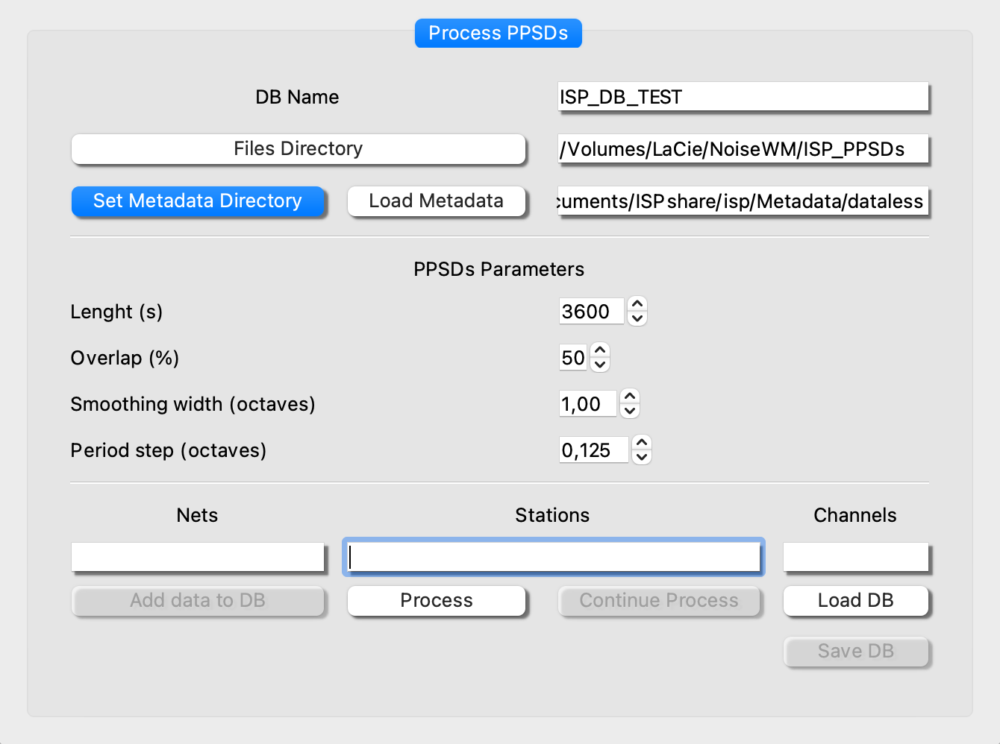

Probability Power Spectral Dentitiy (PPSD)

One the most common tools to evaluate the station performance of seismic data acquisition (Mcnamara and Buland, 2004) is to estimate the Probability Density Functions (PDFs). Once the PDFs are calculated, the seismic noise levels can be compared with the standard low and high noise levels, NLNM and NHNM (Peterson, 1993), or can be calculated cumulative spectrograms to observe seasonal variations.
The ISP submodule “PPSD” allows to build a database to storage the PDFs of the stations/components desired from PPSDs, with an specific frame work for this task. Moreover the original databased can be upgraded with more data. Once the PDFs are computed, they can be visualized into another framework that offers multiple visualization options. The Fig. 1 shows the visualization framework with the PDFs of three components from three different station and the Fig 2 & 3 the diurnal and seasonal variation, respectively. The PDFs are also compared with earthquake power desnsity spectrums (Clinton and Heaton, 2002).
